Drivers, Relays, and Solid State Relays
Driver circuits
A typical digital logic output pin can only supply tens of MA of
current. Even though they might require the same voltage levels, small
external devices such as high-power LEDs, motors, speakers, light bulbs,
buzzers, solenoids, and relays can require hundreds of MA. Larger
devices might even need several amps. To control smaller devices that
use DC, a transistor-based driver circuit can be used to boost the
current to the levels needed for the device. When voltage and current
levels are in the correct range, the transistor acts like a high-current
switch controlled by the lower current digital logic signal. A discrete
BJT
is sometimes used instead of a newer MOSFET transistor especially on
older or low voltage circuits as shown below. On mbed, any GPIO pin
could be used for the logic control input to the circuit with DigitalOut.
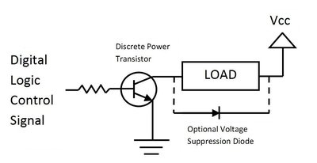
Basic driver circuit using a BJT transistor
The transistor primarily provides current gain. PNP, NPN, or MOS
transistors can also be used. The resistor used on the base of the
transistor is typically around 1K ohm. On inductive loads (i.e.,
motors, relays, solenoids), a diode is often connected backwards across
the load to suppress the voltage spikes (back EMF) generated when
turning devices off. (Recall on an inductor V=L*di/dt, so a negative
voltage spike is produced when turning the device off). Sometimes the
diode is also connected across the transistor instead of the load (this
protects the transistor). The 2N3904
shown below is a small discrete BJT transistor that can be used for a
driver circuit needing less than 200MA. In this circuit with BJTs, Vcc
can also be a higher voltage supply than the logic power supply. 6 or
12V DC is often needed for motors or relays. In battery operated
devices, the load may be directly connected to the battery power and not
pass through the voltage regulator. Many devices such as motors have a
momentary large inrush current spike when they are first turned on and
have a larger stall current, so be a bit conservative on the maximum
current ratings.
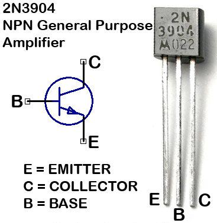
2N3904 Transistor in a TO-92 package
Depending on the current gain of the transistor used, some adjustments
may be needed in the value of the base resistor. A high gain TO-92
transistor such as the ZTX689B can drive up to 2A at up to 12V in this circuit. A Darlington transistor
pair contains two BJT transistors connected together for higher current
gain. If a Darlington transistor in a TO-92 package such as a ZTX605
is used in the driver circuit, outputs of 1A at up to 100V are
possible. At high current levels, the transistor might get a bit hot.
Transistors can even get too hot and burn out, if the circuit is not
designed correctly. The transistor has to dissipate the power (V*I)
across its C-E junction (i.e., the switch point) as heat. This means
that the transistor should either be completely “on” (saturation) or
“off” (cutoff) to minimize heat dissipation and maximize efficiency.
Larger power transistors have metal tabs on the case that can be
connected to a heat sink for cooling. The pins on larger power
transistors are often too large for standard breadboards and the spacing
is not always compatible.
PWM Control
The logic signal (control) turns the transistor on and off to drive
high current loads. For motor speed control or dimming lights, a digital PWM output signal
is typically used for control instead of an analog output. Digital PWM
is more energy efficient than analog as it significantly reduces the
heat dissipated by the transistor (i.e., it is always completely "on" or
"off"). For motors, the PWM clock rate is typically in the tens of KHz
range. For lighting, it needs to be greater than 50Hz or perhaps 100Hz.
Early studies for electric power systems showed that many people have
headaches caused by lighting systems that use less than 50Hz AC even if
they do not directly perceive a flicker. A Class-D amplifier
uses PWM to drive audio speakers and the PWM clock rate is typically
around ten times the highest frequency in the audio signal. A low pass filter is sometimes added on the output. The mbed PWMout Handbook page shows an example using PWM to dim an LED. Even when using PWM, some large transistors may require a heat sink for proper cooling. If the transistor gets too hot to touch, it needs a larger heatsink.
Noise Issues from High Current Loads
Switching high current inductive loads and motor arcing can put noise spikes or voltage surges on power supply lines and it is possible that they can become large enough or that the supply voltage could momentarily drop low enough when turning on a large inductive load to cause a microprocessor to crash and even reset when using the same power supply as the load, so additional power supply decoupling capacitors may need to be added near the high current load, or a separate power supply can be used for the high current load.
If high voltage spikes, surges, or electrostatic discharge (static electricity) are a potential issue, transient-voltage-suppression (TVS) diodes (also known as transorbs) or varistors
(also known as MOVs) are sometimes connected across a high current load
or the high voltage supply lines for even more protection. MOVs are
typically found in AC surge protector outlet strips. A wide variety of these devices
are available in different voltage and current ranges. These devices
typically clip off voltage spikes above a fixed threshold voltage.It is
common to pick a transorb or MOV with a clip-off threshold voltage a bit
higher than the normal operating range found in the circuit (>20%?).
Activated transorbs or MOVs have to dissipate the energy in the clipped
off voltage spike and they are typically rated by the amount of energy
they can absorb before overheating and burning out, so the duration of
the overvoltage spike needs to be relatively short.
Driver ICs
As an alternative to using discrete transistors, special purpose
driver ICs are also available that can drive multiple devices. These ICs
contain several internal transistor driver circuits similar to the one
just described above. A small number are still available in a DIP
package that can plug into a breadboard such as the ULN2803
8-channel 500MA 50V driver seen below, but most new ones are surface
mount ICs that will require a breakout board for use on a breadboard.
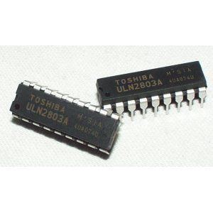
ULN2803 8-Channel Darlington Driver DIP IC
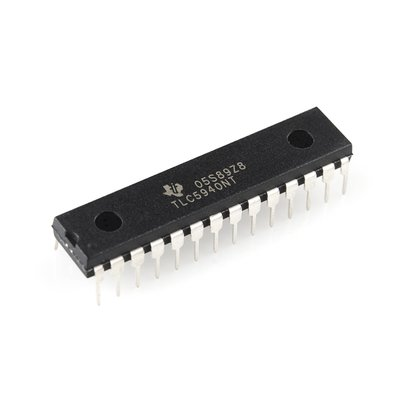
TLC5940 16 channel PWM Driver
The TI TLC5940
is a 16 channel driver IC with 12 bit duty cycle PWM control (0 -
4095), 6 bit current limit control (0 - 63), and a daisy chainable
serial interface (SPI). Maximum drive current is 120 MA per output. It
is handy for expanding the number of high current drive PWM outputs
available. This IC was originally targeted for driving LED arrays. 16
PWM outputs might sound like a lot, but a humanoid robot might need over
twenty to control all of the servo motors used the joints. In addition
to the DIP package seen above, is it also available in surface mount.
Sparkfun makes the breakout board seen below using the surface mount
package. A TLC5940 code library is available for mbed. Driver ICs may also require heat sinks or other cooling considerations when used at high current levels.
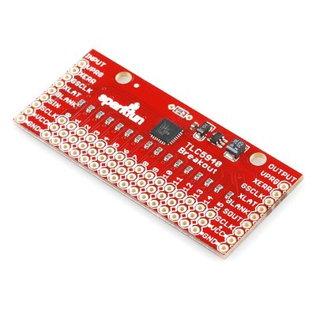
Sparkfun TLC5940 Breakout board
Devices that require several amps of current will need a more complex
driver circuit with larger power transistors on heat sinks, and more
than one transistor current amplification stage may be required. It is
not advisable or reliable in the long term to connect several small BJT
transistors in parallel to increase the current output provided by the
driver circuit; a larger power transistor must be used.
Driver circuits can be built using small discrete transistors such as
the TO-92 size 2N3904 on a standard breadboard. If even higher current
drive is needed, the larger power transistors used will not fit directly
on a breadboard and the wires are not large enough. Having these
devices already assembled on a small PCB will save prototyping time with
mbed, so those options will be the primary focus here.
For speakers, an audio amplifier IC is often used to drive the speaker. New class D audio amplifiers actually use PWM.
MOSFETs
At higher voltage and high current levels, newer MOSFET
transistors are more efficient than the older BJTs. In BJTs, the base
current controls the switch, but in MOSFETs it is the gate voltage. A
common N-channel RFP30N06LE MOSFET transistor symbol and pinout is shown below.
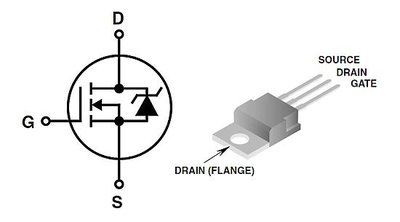
N-Channel MOSFET transistor symbol and TO-220 package pinout
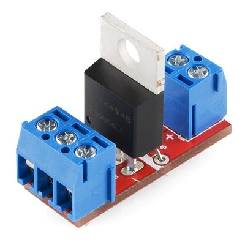
Sparkfun MOSFET driver breakout board
The board seen above uses the RFP30N06LE MOSFET transistor rated at
60V and 30A for higher current loads. The trace size on the PCB and the
wire size for the screw terminals limits loads to around 4A. The screw
terminals are used for high current connections since the wires need to
be larger than the standard breadboard jumper wires. The schematic is
seen in the image below. This special MOSFET has a very low gate input
voltage that works with 3.3V logic signals like those on mbed.
A
typical MOSFET runs just a bit more efficiently if the gate input is a
bit higher than the supply voltage. Special MOSFET driver ICs such as
the LTC1155 use a charge pump circuit
to drive the gate voltage higher on higher voltage MOSFET driver
circuits using a normal digital logic level control signal (i.e., useful
when load voltage (RAW in schematic) is larger then the logic supply
voltage). The LTC1155
is used with a MOSFET in many laptop PCs and cellphones to turn power
on and off for power management and is available in an 8-pin DIP package
or surface mount. Overvoltage and short circuit protection can also be
added using the LTC1155. Some large MOSFETs including the one on the
Sparkfun board already contain an internal snubber diode
for driving inductive loads. If this is not the case, it would be a
good idea to add an external diode when driving inductive loads.
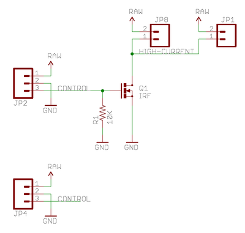
MOSFET driver circuit for high current DC loads
Floating Inputs
Note
the 10K pull-down resistor on the control input line. This prevents the
gate input from floating high and turning on the device when nothing is
driving the input. If it did float, it is also possible that the MOSFET
might oscillate and overheat. In most cases, the device should be off
if something is wrong. This can happen if a wire was not connected or
perhaps briefly when the microcontroller is reset and GPIO pins reset to
input mode. It also might happen if the power supply for the
microcontroller is not on, but another power supply for the device is
on. A similar design issue of leaving control inputs floating in a
computer control system in a hydroelectric power plant once caused a
major power blackout in California when power was lost on the computer.
Wiring
| mbed | MOSFET PCB | 5V <200MA* External Device |
|---|---|---|
| gnd | gnd | |
| 5V | JP2-1 RAW | |
| P8 | JP2-3 Control | |
| JP1-1 | Device(neg) | |
| JP2-2 | Device(pos) |
Any digital out pin can be used for control (connects to the control
input of the driver circuit). If you plan on using PWM, select one of
the mbed PWMOut pins.
Keep in mind that mbed can only supply about 200MA of current for
external devices via USB power, so an external DC power supply may also
be needed for large loads. When using external DC power supplies for
additional power (to RAW in schematic above), only connect the supply
grounds together (i.e., and not mbed Vcc and RAW even if the voltage is
the same).
Here is an example program the turns the transistor switch on and off every .2 seconds.
1 2 3 4 5 6 7 8 9 10 11 12 13 14 15 16 | #include "mbed.h" DigitalOut myled(LED1); DigitalOut Ctrl(p8); int main() { while(1) { Ctrl = 1; myled = 1; wait(.2); Ctrl = 0; myled = 0; wait(.2); } } |
IGBTs
The insulated gate bipolar transistor (IGBT)
is a new type of semiconductor device used as an electronic switch in
newer designs that combines high efficiency and fast switching. It is
used in medium and high power applications such as appliances, electric
cars, trains, variable speed refrigerators, air-conditioners, stereo
systems that use switching amplifiers, and even welding machines. They
can be connected in parallel to make devices with ratings up to 6000V
and hundreds of amps.
It has an isolated gate FET as the control input of a BJT.
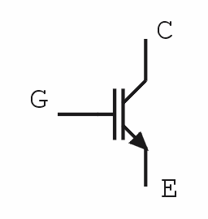
IGBT schematic symbol
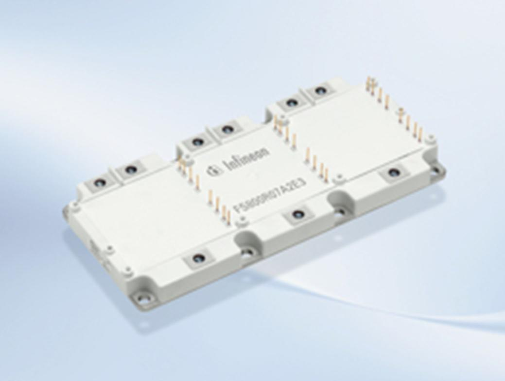
Infineon Hybrid Car IGBT switch module
The IGBT module seen above is used to switch the drive motor in hybrid cars. It contains six IGBTs (3 Phase AC motor with variable frequency drive using PWM) and is rated at 800A/650V. A wide array of IGBT modules
are available ranging from several amps to several thousand amps and in
this range they can be more energy efficient than power MOSFETs.
Special Purpose Driver ICs
As an alternative to using several discrete power transistors mounted
on a PCB, multiple driver circuits are often packaged in ICs targeted
for particular applications to save space and reduce cost. Two of the
most common examples are motor and LED driver ICs.
H-Bridge Driver ICs
To control and reverse a DC motor, an H-bridge circuit
is used with two control signals and four driver transistors. This
allows the current direction through the load to be reversed similar to
swapping the wires on a DC motor.
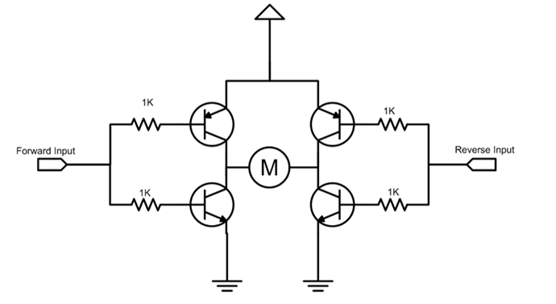
Basic H-bridge driver for DC motor control
The basic H-Bridge circuit with four power transistors that provide
drive current for the motor is seen above. In this circuit, you can
think of the power transistors functioning as on/off switches. Two
digital logic level inputs, forward and reverse, turn diagonal pairs of
transistors on and off to reverse the current flow through the DC motor
(M). In this basic circuit, forward and reverse must not both be turned
on at the same time or it will short the power supply. More advanced
H-bridge circuits prevent this issue and add a dynamic brake feature.
MOSFETs are often used in newer H-bridge ICs instead of BJTs.
See http://mbed.org/cookbook/Motor
for example code using an H-bridge driver to control the direction of a
DC motor. It also uses digital PWM for motor speed control. Small
H-bridge modules are available on breakout boards.
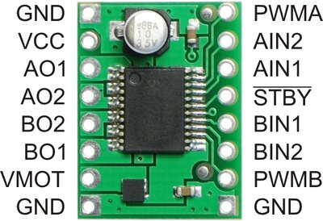
Pololu or Sparkfun 1.2A MOSFET Dual H-bridge breakout board
The small breakout board seen above uses Toshiba’s TB6612FNG dual
H-bridge motor driver IC, which can independently control two
bidirectional DC motors or one bipolar stepper motor. A recommended
motor voltage of 4.5 – 13.5 V and peak current output of 3 A per channel
(1 A continuous) make this a handy motor driver for low-power motors.
Many small robots have two DC drive motors controlled by a dual H-bridge
driver with PWM speed control. The Sparkfun magician robot cookbook page has code examples for mbed. Higher current H-bridge modules are also available.
The speed of DC motors varies with the load, and will also vary a bit
from motor to motor even on identical motors. For accurate speed control
under varying loads, feedback is typically required. Three cookbook
projects, QEI, PID, and mbed Rover provide some additional background on how to use feedback for more accurate speed control of DC motors.
Stepper motor driver ICs
Stepper motors
have multiple coil windings that need to be activated in the current
sequence to rotate the motor shaft by a fixed angle without the need for
position feedback hardware. Stepper motors are used in devices to
provide low-cost accurate position control (i.e., moving the print head
on an inkjet printer). Stepper motor driver ICs contain an H-bridge
driver for each winding and often also include a small state machine or
counter to sequence through the correct states to drive the motor. The
typical control inputs are step and direction. The newest stepper motor
driver ICs can respond to a variety of complex commands that even
include the capability to move fractions of a step using PWM or perhaps
move multiple steps automatically. The Pololu stepper motor driver
breakout board seen below will drive a bipolar stepper motor up to 2A
per coil using the Allegro A4988 DMOS Microstepping Driver IC. An example library to control stepper motors is available in the cookbook. A wide variety of stepper motor driver ICs is available.
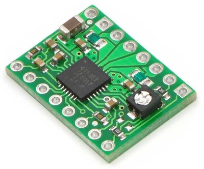
Pololu stepper motor driver breakout board
LED Driver ICs
High-power bright LEDs require more current than the typical digital logic output pin can provide and they need a driver circuit. The small module seen below contains the Allegro A6281 IC with three 150MA driver circuits for a high-power red, green and blue(RGB) LED. It also includes PWM dimming hardware for each of the three driver circuits and it can generate 230 different colors and brightness levels. Code examples for mbed can be found on the Shiftbrite cookbook page. The modules can be chained together to build large LED arrays. With the rapid growth of LED lighting, quite a few LED driver ICs are available.
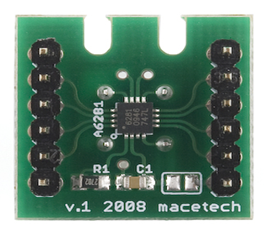
Shiftbrite RGB LED driver breakout board
Relays
Relays can also be used to switch high current and/or high voltage AC and DC devices using logic signals for control.
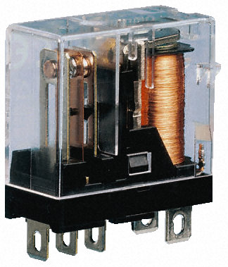
Electromechanical Relay
An electromechanical relay contains an electromagnetic coil (right side of image above) that moves a metal arm to make and break an electrical connection. Electromechanical relays can be used to switch high current and also AC devices. They provide electrical isolation between the control signal and the load and are relatively low cost. No common ground connection between the control signal and load is needed. A standard digital logic GPIO output pin does not supply enough current to drive a relay coil directly. When using logic signals to control a relay, a driver circuit must be used to boost the current needed to energize the relay’s electromagnetic coil. The load is switched on and off using the relay’s metal contacts that move when the coil is energized. Since the metal contacts actually touch, relays will have less of a voltage drop across the switch point than transistor circuits. They are sometimes used to switch regulated power supplies on and off. Relays tend to more resistant to failure caused by high voltage surges than semiconductor devices.
Electromechanical relays do have some limitations for designers to consider:
- The number of lifetime ON/OFF cycles is limited by mechanical wear (typically 106 to 107 cycles)
- They have slow ON/OFF times – around 20 per minute. Too slow for motor speed control or dimming lights.
- Relay contacts can wear out due to arcing on inductive loads (perhaps as few as 105 cycles) even on rated loads.
- Oxidation on relay contacts can be a problem on low voltage
analog signals. (around 2 volts is needed to initially punch through the
oxidation layer that occurs between any two metal contacts)
- Worn out relays will sometimes stick due to mechanical wear and an audible click is typically heard during switching.
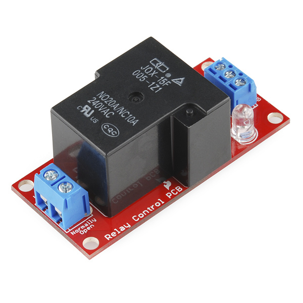
Sparkfun relay board with driver
Sparkfun makes a low-cost relay board shown above that contains both the
relay and the required driver circuit built using a discrete
transistor. The relay coils on this relay require around 200MA at 5VDC.
It is easier to drive relays like this that use a lower coil voltage.
The relay board's
driver circuit is built using a BJT as seen in the schematic below. The
relay can switch up to 220VAC at 20A using a logic signal for control,
but the small PCB layout and screw terminals likely limit it to lower
voltage and current levels to at least half of these ratings. A similar
board is available from Sparky's Widgets. It is probably wise to be very conservative on the maximum voltage and current ratings quoted for relays in datasheets.
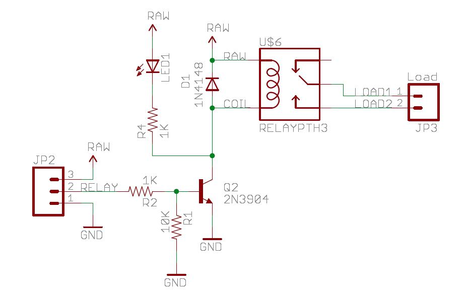
Sparkfun Relay Board Schematic
The snubber diode backwards across the relay coil absorbs the reverse voltage inductive spike that occurs when turning off the coil (i.e., V=Ldi/dt).
Any digital out pin can be used to control the relay (connects to the input of the relay driver circuit).
Wiring
| mbed | Relay PCB | External Device |
|---|---|---|
| gnd | JP2-1 gnd | |
| 5V | JP2-3 or ext 5V for RAW? | |
| P8 | JP2-2 Relay Control | |
| JP3-1 | Load1 | |
| JP3-2 | Load2 |
Safety Note on High Voltages
A
high voltage power line shorted to a digital logic circuit on a
breadboard can blow up an entire computer system, or cause electrocution
if touched.
For safety, keep the wires for any high voltage and/or high current
devices well away from the breadboard and do not touch them when power
is on. Even a momentary wire short can blow things ups. An inline fuse
and even a GFI
breaker is not a bad idea. Long before a standard household AC circuit
breaker trips, electronic parts will blow out with a short. Make sure
that the bottom side of the PCB does not short out on any metallic
surfaces. Breadboard contacts and small jumper wires only handle about
one amp. The relay boards typically use screw terminals to attach the
larger wires needed for the external device. Just driving the coil of a
large relay requires most of the additional current that can be supplied
to mbed via the USB cable, so an external DC power supply will likely
be needed to power the relay coils and the load of the external device.
For electrical isolation, when using a relay to control external AC
devices or high voltage DC devices, do not connect the grounds on the
power supplies from the control side to the load side.
Here is an example program the turns the relay on and off every 2 seconds.
1 2 3 4 5 6 7 8 9 10 11 12 13 14 15 16 | #include "mbed.h" DigitalOut myled(LED1); DigitalOut Ctrl(p8); int main() { while(1) { Ctrl = 1; myled = 1; wait(2); Ctrl = 0; myled = 0; wait(2); } } |
A demo using mbed with this code example for the Sparky's Widget relay breakout board is available at http://mbed.org/users/4180_1/notebook/relay-breakout-boards/.
For safety and especially if you do not have prior experience working
with high voltage AC, one of the sealed devices such as the Power Switch Tail II
seen below would be a safer alternative to switch small household AC
devices. It has an internal switch module and the high voltage
connections are all enclosed in the case. Standard AC plugs are already
attached and international versions of the Power Switch Tail are also available. The US version is also available from Sparkfun. A code example for mbed is available at http://mbed.org/users/4180_1/notebook/powerswitch-tail-ii/
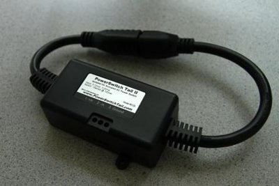
The Power Switch Tail II has an internal driver and relay circuit with the standard AC plugs for the US
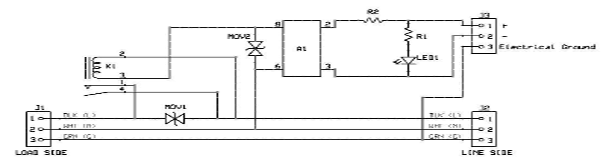
Power Switch Tail II Schematic
In the schematic above, A1 is a VO2223
0.9A 600V optically isolated TRIAC (Phototriac) in a DIP package that
is used to drive the mechanical relay. Note that it also has two MOVs
included for surge suppression. It addition to the standard relay
version, a Power Switch Tail with a solid state relay (SSR) is also
available. SSRs and TRIACs will be explained in a later section.
The small Phidgets dual relay board seen below works in a similar manner to the Sparkfun board, but it has two relays.
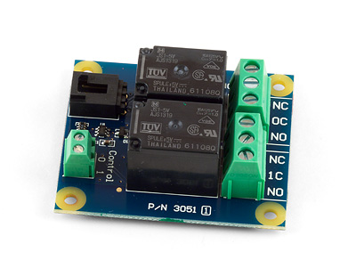
Phidgets Dual relay board
Relays need to be selected based on both the input and output current
and voltage rating. Since contacts can wear out on the output side be
conservative on current ratings.
Reed Relays
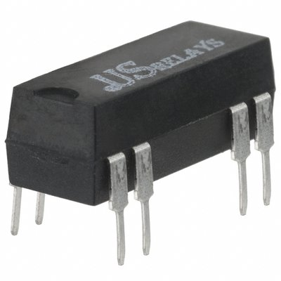
A small reed relay module in a DIP package
A reed relay is a type of relay that uses an electromagnet to control one or more reed switches. The contacts are of magnetic material and the electromagnet acts directly on them without requiring an armature to move them. Sealed in a long, narrow glass tube, the contacts are protected from corrosion, and are usually plated with silver. As the moving parts are small and lightweight, reed relays can switch much faster than relays with armatures. They typically switch lower current values than a large relay. They are mechanically simple, making for a bit more reliability and longer life. The coil current needed is lower (perhaps 10MA @5V) and in some cases a driver circuit may not be needed if the digital logic output has high drive current. Some reed relays already contain a snubber diode. If not, an external back EMF snubber diode would still be a good idea. Many are small enough to come in a DIP package that can plug into a breadboard.
Solid State Relays
In many applications, solid state relays can be used instead of electromechanical relays. Solid State Relays (SSRs) offer several advantages over electromechanical relays:
- Most have optical isolation between input and output load
- No moving parts - built using semiconductors
- Some are fast enough for motor speed control and dimming lights
- Resistant to shock and vibration
- Around 100X more reliable than mechanical relays
- Silent operation
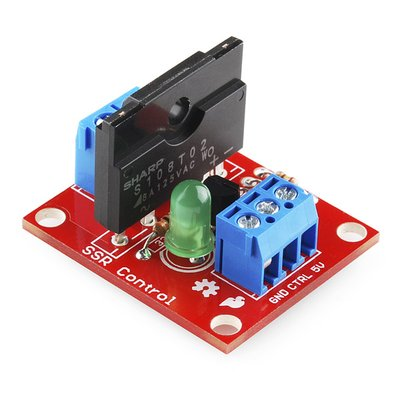
Sparkfun Solid State Relay Board
The schematic is shown below for the Sparkfun Solid State Relay board seen above. It uses a Sharp SSR module
and can switch 125VAC at 8A (AC only - not DC). Note that it also
requires a driver circuit and the external wire connections are the same
as the relay board. A demo for mbed is available at http://mbed.org/users/4180_1/notebook/ssr-breakout-boards/
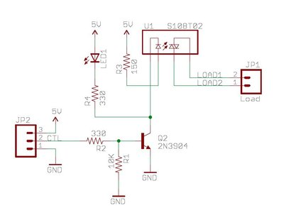
Sparkfun Solid State Relay Board Schematic
Optical Isolation
Optical or mechanical isolation (relays) between higher voltage
supplies and computers is always a good idea. Not having to connect
grounds between supplies helps in noisy industrial environments. Long
wires can also pick up large transient voltages. One of the first
projects to control and instrument an airport ended abruptly when a
lightning bolt from a thunderstorm hit near the end of the runway and
the ground wires carried the ground voltage transient spike all the way
back to the control tower and blew up the computer. Most SSRs have an opto-isolator
on the input. As seen below, Sparkfun also makes a small opto-isolator
breakout board with small driver transistors on the output to isolate
the computer output signals and convert them to higher voltage signals.
It has limited current drive, but it could be added to the input side of
a driver circuit to provide optical isolation. Opto-isolators are
sometimes also used on sensor inputs to a computer. In this case, the
sensor drives the input side and the output side connects to the
computer.
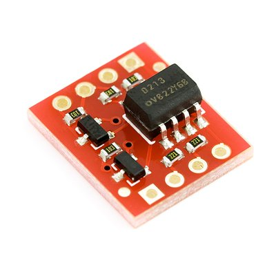
Sparkfun Opto-isolater breakout board
As seen below, the ILD2213T optocoupler IC used on the Sparkfun board contains two optically
coupled pairs consisting of a Gallium Arsenide infrared LED and a
silicon NPN phototransistor.
Signal information, including a
DC level, can be transmitted by the LED via IR (infrared light) to the
phototransistor while maintaining
4000V of electrical isolation between the input and output. Before
reaching 4000V, other parts such as wires and connectors will likely
short out first.
Opto-isolators tend to be a bit slow to switch when compared to the
speed of digital logic circuits. This device is in the five microsecond
range. A few SSRs use reed relays on the input signal or feed the input
through a DC to AC converter with a transformer for electrical
isolation.
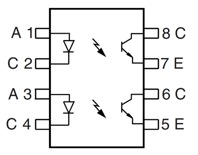
ILD213T Dual Optocoupler IC
Other SSR modules
Unfortunately, solid state relay modules typically cost a bit more than mechanical relays. Many SSRs include a zero crossing circuit that turns on or off the device only when the AC voltage level is zero(a zero crossing). This also helps to reduce RF noise emissions generated by switching high current loads. The Phidgets SSR board seen below can switch both AC and DC voltages. It uses a small NEC/CEL SSR IC.
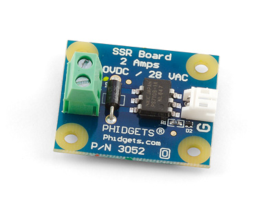
Phidgets SSR board
Switching AC
Some solid state relays can also drive AC loads.
This is possible using a TRIAC
as in the Sparkfun Solid State relay board schematic above with the
Sharp SSR module. The TRIAC symbol looks like two diodes connected in
opposite directions as seen below. The gate control input (G) only
requires a few milliamps and the AC load connects to A1 and A2. In the
Sharp SSR module, the IR light from the LED drives the TRIAC gate input
(provides optical isolation). A TRIAC's gate input can be carefully time
controlled in phase with the AC signal to dim lights, control motor
speed, or adjust the power output to the load. Household light dimmer
switches often use TRIACs.
A TRIAC can switch AC loads
Two MOSFETs with their source pins connected together as in the Phidgets
SSR module with the NEC/CEL SSR IC will also drive AC loads as seen
below. The gate input is optically isolated and the MOSFETs drain pins
connect to the AC load. This works since all MOSFETs have a substrate
diode that always conducts current in the reverse direction (only the
normal current direction can be switched). Be sure to check the SSR's
datasheet, SSRs can be AC only (TRIAC) or AC/DC(have two MOSFETs) or DC
only(one MOSFET).
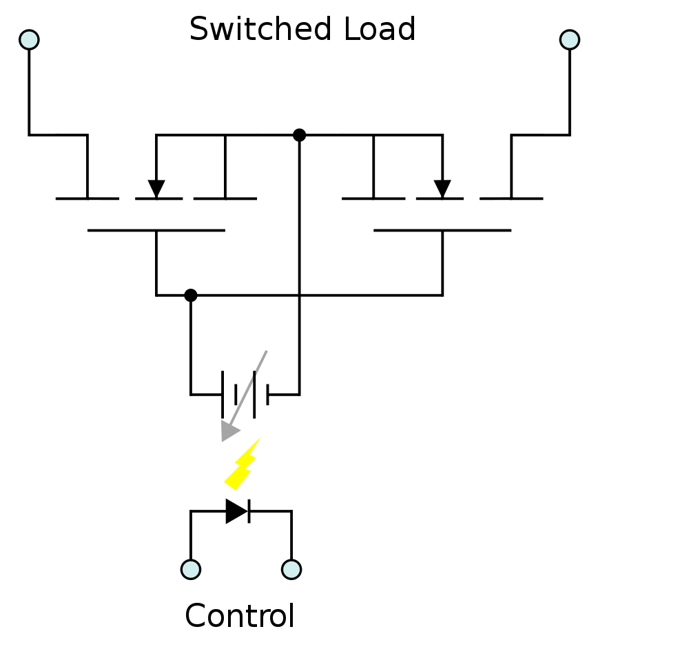
SSR using two MOSFETs to switch AC loads with optical isolation
The power SSR tail module seen below can be used to dim incandescent or dimmable LED lights.
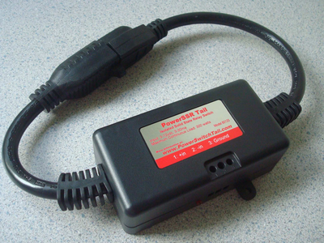
The PowerSSR Tail includes AC plugs and an SSR in an enclosed case
As seen in the schematic below, it contains a solid state relay built
using an opto-isolator with digital logic inputs, a TRIAC for AC
switching, and a MOV for surge suppression. A zero crossing and state detection tail module with isolation are also available.
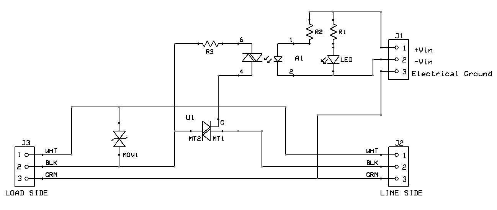
Power SSR Tail Schematic
Higher Power SSRs
Opto 22 developed the first SSRs and makes a wide variety of DC and
AC SSR modules including the large module below that will switch 480V AC
at 45A with a 3V DC logic control input. They are frequently used in
industrial automation systems. Heatsinks may also be needed on SSRs.
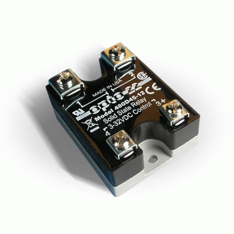
Opto 22 480D45 SSR module
IGBTs are also starting to appear in new designs of medium to high current SSRs. A wide assortment of SSRs is available.
Industrial Automation Systems & PACs
Programmable automation controllers (PACs)
for industrial automation systems with a large number of inputs and
outputs often mount a customized mixture of relays, AC/DC SSR modules,
and AC/DC isolated input modules on special breakout boards or rail
mount systems with screw terminals. Some SSRs mount directly to the
rail. Several examples are shown below. They are handy whenever there
are a large number of external I/Os to hookup with larger wires. A
ribbon cable connector ties the digital I/O signals to the
microcontroller. Such packaging works out well and helps to keep the
wiring under control and organized. If a lot of external devices need to
be connected in a prototype, many of these systems can be adapted for
use with small microcontrollers such as mbed.
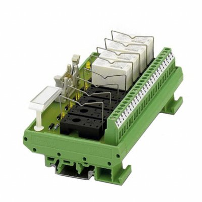
DIN rail mounting system for SSRs and relays.
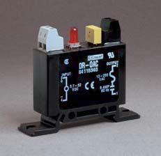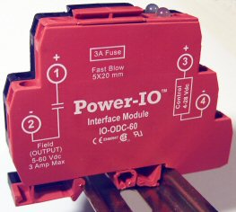
Two types of direct DIN rail mount SSR modules from Crydom and Power IO
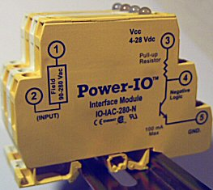
DIN rail mount optically isolated AC input module
Home Automation Systems
If you only need to control household AC devices, several low-cost
home automation systems are available with small plug in modules for
controlling household AC devices and dimming lights. X10
is of the first low-cost systems, and it uses signaling over the power
lines to control each module. Switches on each X10 control module are
configured by the user to select a unique address (0..255) for each AC
device as seen below. X10 power line control signals are sensitive to
distance and noise and will not cross over from one power phase to the
other, just like home networking plug in devices. In addition to a
power line interface to decode the control signals, a module contains a
relay for appliances, or a triac to dim lights. A small interface device
is available from X10 to send the control signals over the power line
using a microprocessor. An easier to use RS232 serial interface for X10
can still be found, but it is no longer in production. There are two
mbed X10 projects already available in the mbed cookbook, links to ways to interface to the X10 power line signals, and code for a wireless interface to the X10 wireless module. The X10 wireless receiver module then sends out the signals on the power line to control modules.
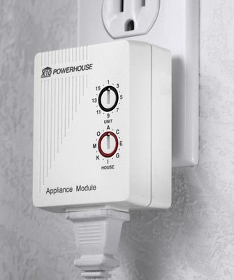
A plug in X10 appliance module can switch household AC devices
Another home automation system is Z-wave. It uses RF signals to control the plug in AC modules. Insteon
uses both power line and RF signals in a mesh network. One of the
controllers from these systems could be interfaced with mbed to use
these modules. WiFi controlled AC outlet strips are also starting to
appear such as the one seen below. These systems work well in homes, but
probably would not be appropriate for use in noisy safety critical
industrial environments.
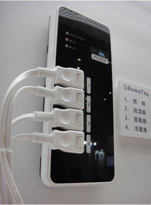
The iRemoTap can be controlled via WiFi
1 comment on Drivers, Relays, and Solid State Relays:
Please login to post comments.
Thank for the effort. The page is very useful.